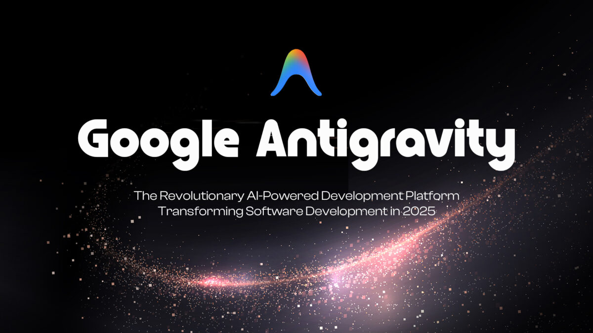

🎬
Cinema Studio
· 照片動態動畫
16:9
9:16
1:1
🔊 打字音：開
🔊
✏️ 編輯
💾 存檔
📑 另存新檔
🔴 錄製
🔄 重整
↺ 恢復範本
⏮ 重播
▶ 播放
00:00 / 04:51
🎬 動作
💬 旁白台詞
📁 換圖與插片
✕ 關閉
1 指示框與標籤
聚光燈：關
外觀樣式與色彩
紅框：顯示中
標籤文字:
框線色:
粗細:
2px 細
3.5px 標準
5px 粗
7px 超粗
位置:
框外上方
框外下方
框內頂端
標籤底色:
字色:
純白字
深黑字
金黃字
大小:
11px 小
13px 中 (標準)
15px 大
18px 特大
2 鏡頭縮放與運鏡
歸位
縮放:
-
1.00x
+
0.2x
0.5x
1.0x
1.5x
2.0x
🎨 色彩風格:
🌈 自然原色 (Natural)
🎞️ 復古底片 (Warm Vintage)
🎬 電影青橙 (Teal & Orange)
🌅 晨曦暖調 (Golden Hour)
❄️ 冷冽電影 (Cold Cinema)
🖤 經典黑白 (Classic B&W)
全部套用
🎬 動畫預設:
⚡ 選擇經典照片運鏡...
🔍 慢速推近 (Zoom In)
🔎 特寫拉遠 (Zoom Out)
⬅️ 全景向左平移 (Pan Left)
➡️ 全景向右平移 (Pan Right)
⬆️ 由下往上推 (Tilt Up)
⬇️ 由上往下移 (Tilt Down)
↗️ 傾角推鏡 (Diagonal Zoom)
⏹️ 靜止畫面 (Static)
全部套用
手動自訂:
A點
B點
模擬AB
運鏡時長:
1.0s
3 滑鼠軌跡與點擊
試播點擊動畫
鼠標型式：簡約極致白
游標：顯示中
點擊時機點:
到 B 點馬上點擊
不點擊 (僅停留)
滑鼠軌跡:
A點
B點
模擬AB
移動時長:
0.8s
旁白解說詞
比例:
精緻 (推薦)
標準
偏大
✨ 插入『重點』標籤
💬 當前片段旁白台詞 (全部完整顯示)
✨ 插入『重點』標籤
0 字
💡 提示：使用
『重點詞』
符號可自動套用高亮黃色膠囊效果
長文自動撐開，絕不截斷
⚡ 模式一：CSV 腳本全自動產生影片
🚀 效率提升 10 倍
圖片放進
images/
資料夾，用 Excel 填好腳本後直接上傳，秒級自動生成整部影片（包含圖片路徑、旁白、時長、標籤）！
📥 下載腳本範本 (CSV)
📤 上傳腳本自動產生
📋 貼上 Excel 腳本產生
➕ 插入新圖片段落
➕ 插入新影片段落
🖼️ 選擇本機圖片更換 (自動內嵌單檔)
↺ 恢復實機系統畫面
📁 【專屬資料夾模式】：
📂 挑選 images/ 圖片
⚡ 批次多選圖片自動對應所有片段
套用路徑
(圖片放在 images/ 資料夾，新電腦整包複製帶著走)

這是在此處新插入的圖片演練段落，可在下方微調台詞與運鏡！
⏱️ 時間軸刻度尺
總片長:
02:58
|
共
9
個片段
(含
1
張圖片 📋 點此查看總覽)
📥 貼上片段
🎵
加入配樂
▶
✕
📍 當前播放:
片段 1 · 00:00 ~ 00:03 (3s)
⏹ 停止錄製並下載
📋 直接貼上 Excel / CSV 腳本
✕
💡 您可直接從 Excel 選取整列（含
圖片路徑、旁白台詞、時長、標籤
）按
Ctrl+C
複製後貼在此處，按一鍵產生即可！
取消
⚡ 立即解析並產生片段
🎉 成功解析腳本共 4 個片段！
✕
請選擇您想要的生成方式：您可以選擇「完全替換」整部影片，或「附加」在現有時間軸後面。
取消
➕ 附加在現有片段後方
⚡ 完全依照腳本替換生成新影片
📋 全片片段畫面與圖片總覽
✕ 關閉
🎥 選擇錄製影片範圍
✕
請選擇您要匯出錄製的畫面區域：
🎯 核心相片動畫畫布 (純淨動態畫面)
推薦
僅錄製中央相片運鏡畫面、指示框標籤、滑鼠軌跡與底部字幕。自動切除上方控制按鈕列與多餘黑邊。
📐 實機模擬視窗 (含 Mac 紅黃綠標題列)
包含上方 MacOS 擬真標題列、主畫面與底部字幕。
🖥️ 整個分頁 / 視窗 (全螢幕不裁切)
原生錄製模式，完整收錄瀏覽器分頁畫面。
💡
重要小提示：
點擊開始後，在瀏覽器跳出的分享視窗中選擇
「此分頁」
並確認
「分享音訊」
已勾選，錄影將自動從片頭從頭播放錄製！
取消
🔴 開始錄製